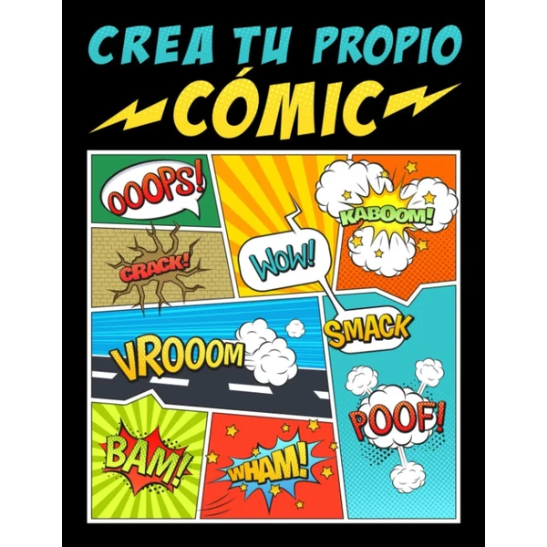

👶 10 años
Crea tu Propio Cómic
Un libro que enseña paso a paso a crear personajes, viñetas y diálogos para diseñar un cómic propio desde cero. Pensado para quienes ya dibujan algo y quieren dar el salto a contar historias completas.
⭐
¿Por qué nos gusta?
- ✔Enseña a crear personajes y viñetas propias.
- ✔Progresión paso a paso, sin conocimientos previos.
- ✔Fomenta contar historias a través del dibujo.
💬
Lo que más destacan las familias
Muchos padres coinciden en que es un buen empujón para pasar de dibujar sueltos a crear historias completas con hilo narrativo. El formato paso a paso ayuda incluso a quienes nunca han dibujado un cómic.